Angela ShiraGoogle · a year ago
★★★★★
“Staci did both my kids tattoos. I will be returning to have her do my tattoos as well. Her line work is superb…”
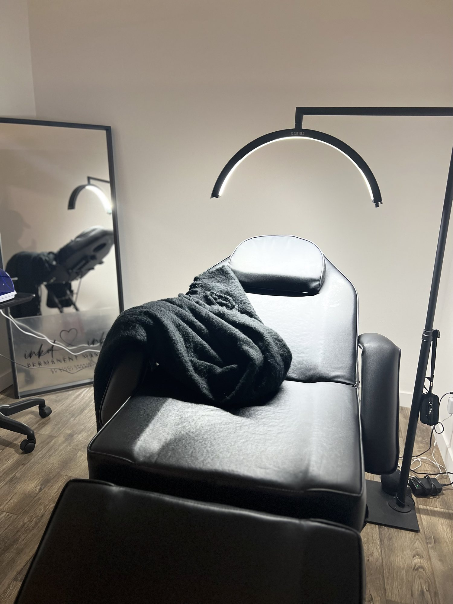
Glitter realism tattoos and hyper-realistic permanent makeup, upstairs in downtown Sumner.Tattoos & permanent makeup, Sumner
When to find her
checking hours…
909 Alder Ave, Suite 202, Sumner, WA 98390
Open in Maps ↗
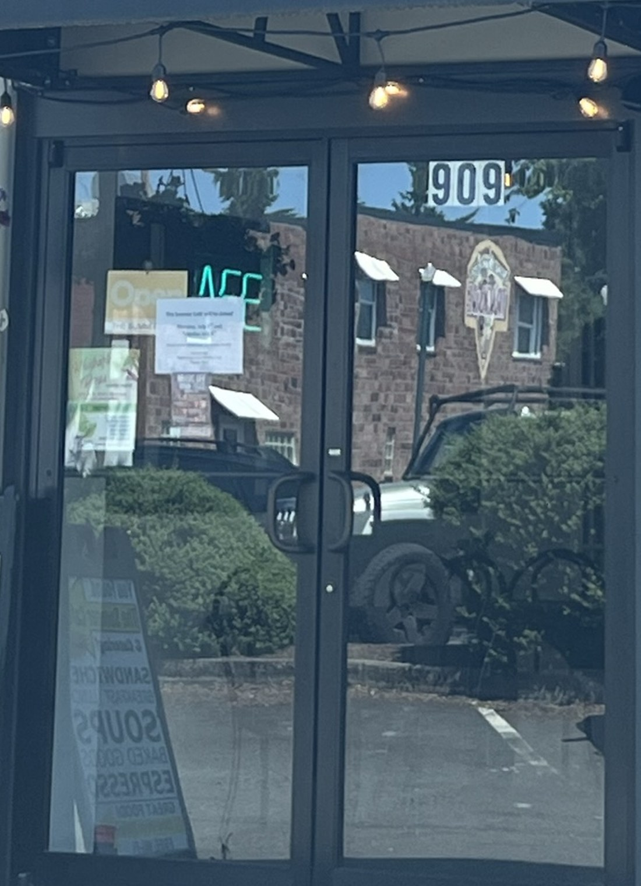
What she does
A LUX permanent makeup & tattoo suite, one block off Main Street.
"I specialize in Glitter Realism & Sticker Realism Tattoos and also a Master Permanent Makeup Artist." Staci Shantel, owner & artist
"Brows make ALL the difference and we map each client to their unique bone structure." — Staci
Not a full list — send Stace a message and she'll tell you straight whether you're a candidate.
Her portfolio
Seventeen real pieces off Staci's own Google and portfolio pages.
17 pieces showing
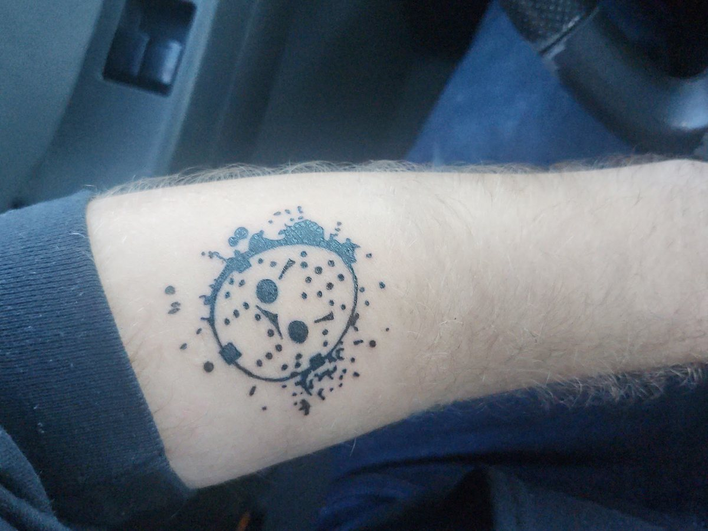
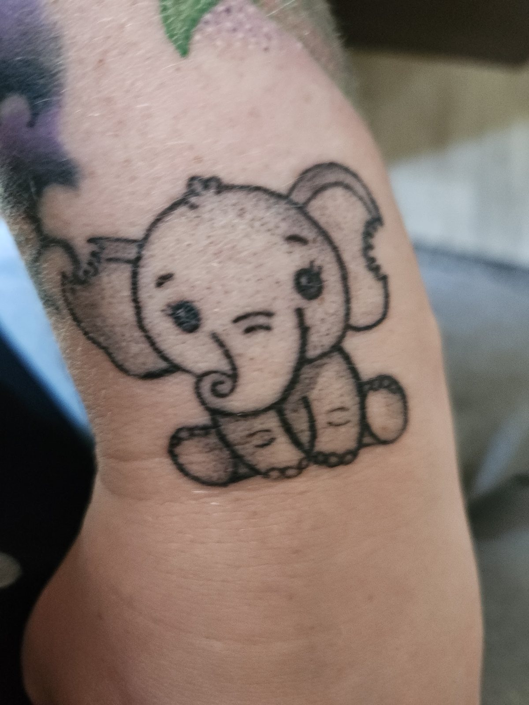
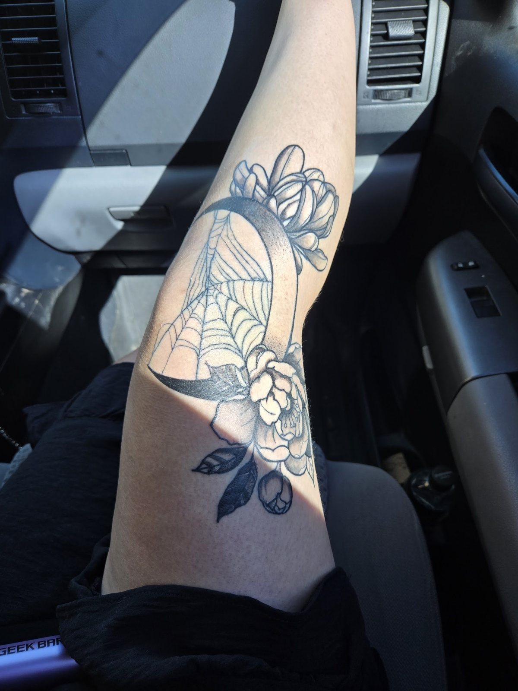
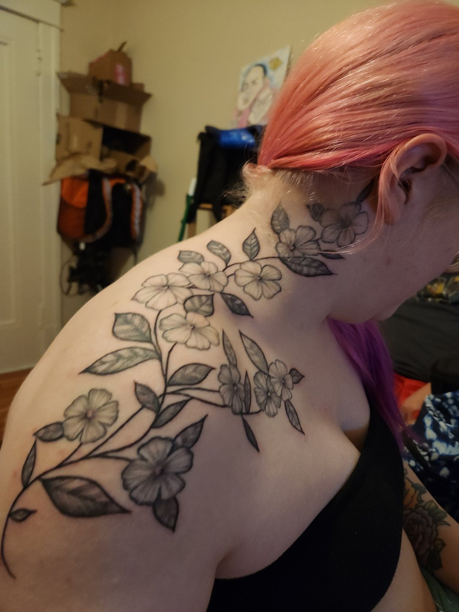
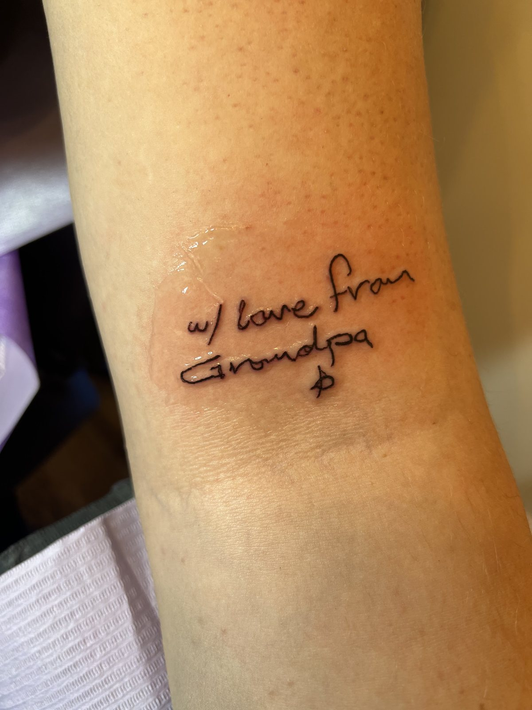
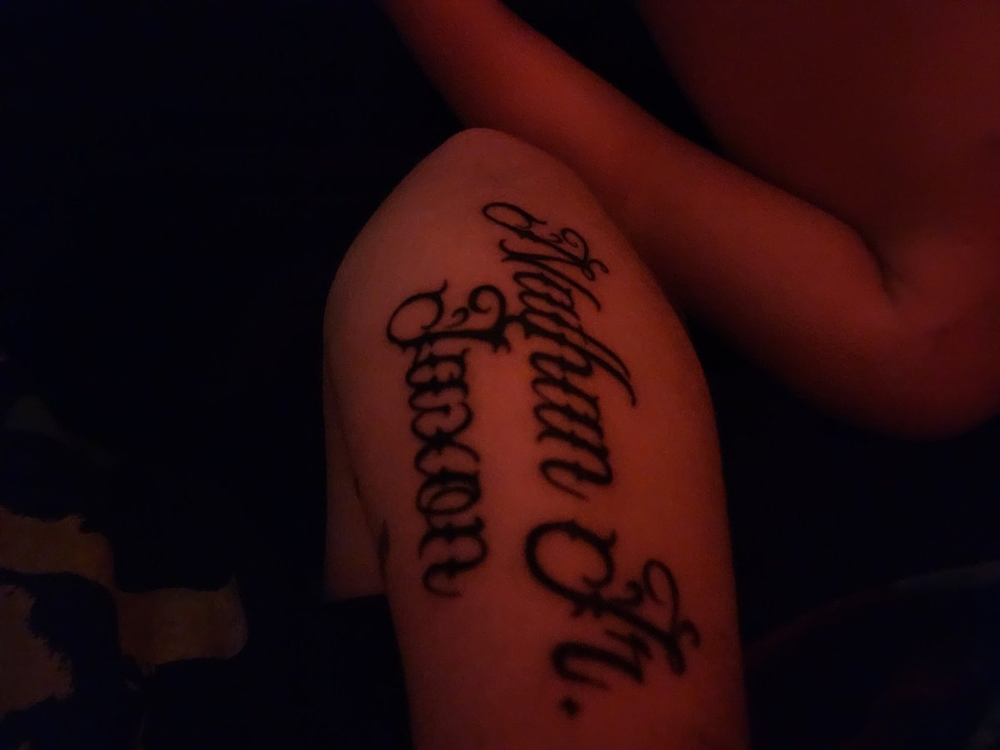
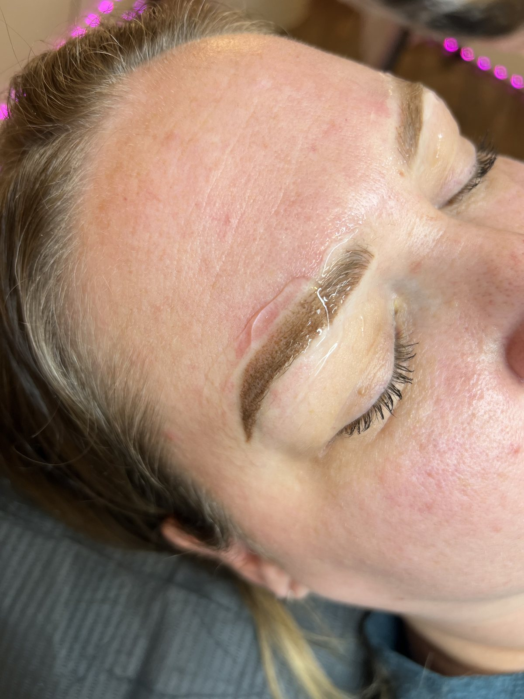
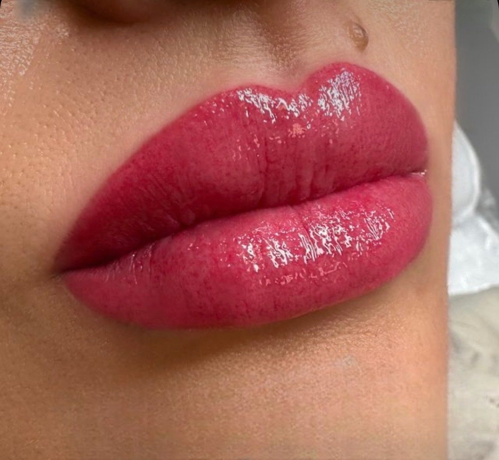
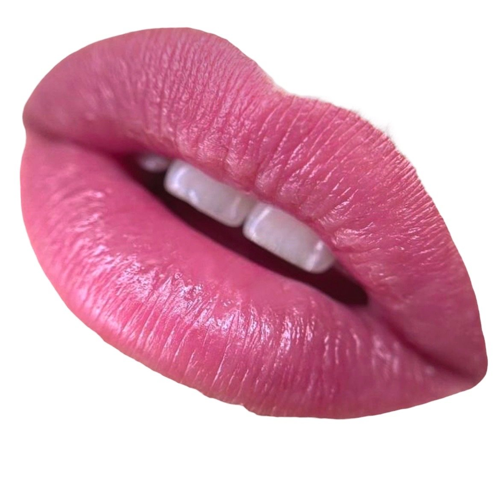
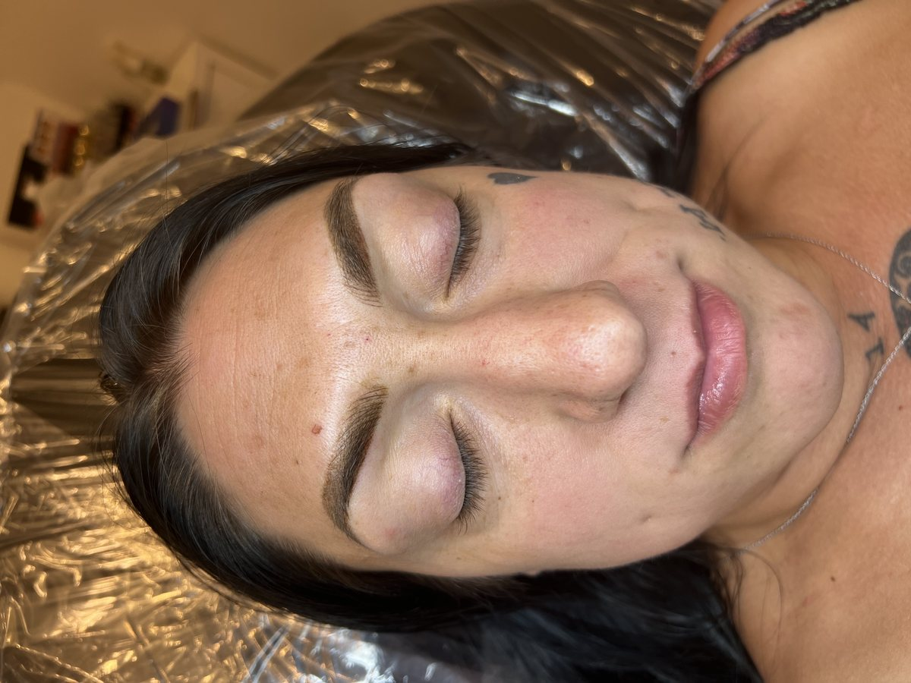
Straight off her Google listing
“Staci did both my kids tattoos. I will be returning to have her do my tattoos as well. Her line work is superb…”
“Omg idk where to start, Staci is such a sweetheart- she killed it for my tattoos! She added 3 to my leg and then fixed a blew out tattoo of mine! So grateful for her”
“Had the most amazing experience. I was even able to take a nap during the session. She was so kind and caring and gentle. Loved this experience!”
“Staci takes the time to get to know you and she gets the details spot on. I've done two flash with her so far and I couldn't be more pleased.”
Meet Stace
"Oh Heyy there 🙌 my name is Staci Shantel and I am the Owner|Artist behind Ink'd Ink. A tattoo Parlor in Downtown Sumner."
A Washington State permanent makeup & tattoo artist, working out of a comfy, private suite she keeps by appointment only.
She moved Ink'd Ink. into 909 Alder Ave — one block off Main Street — and announced it herself on Facebook. Upstairs, behind the blue doors, it's her room: one chair, one crescent light, her own mark on the mirror.
"Let's Accentuate Your Natural Beauty TODAY 💋 Can't Wait to Meet Ya!"
Book with Stace
Text, email or the form here — what you want, roughly where it goes, and any reference you've saved.
Whether it's a fit, which technique she'd use, and — for permanent makeup — whether you're a candidate.
Up the stairs, behind the blue doors. Private room, one client at a time.
Straight from Stace